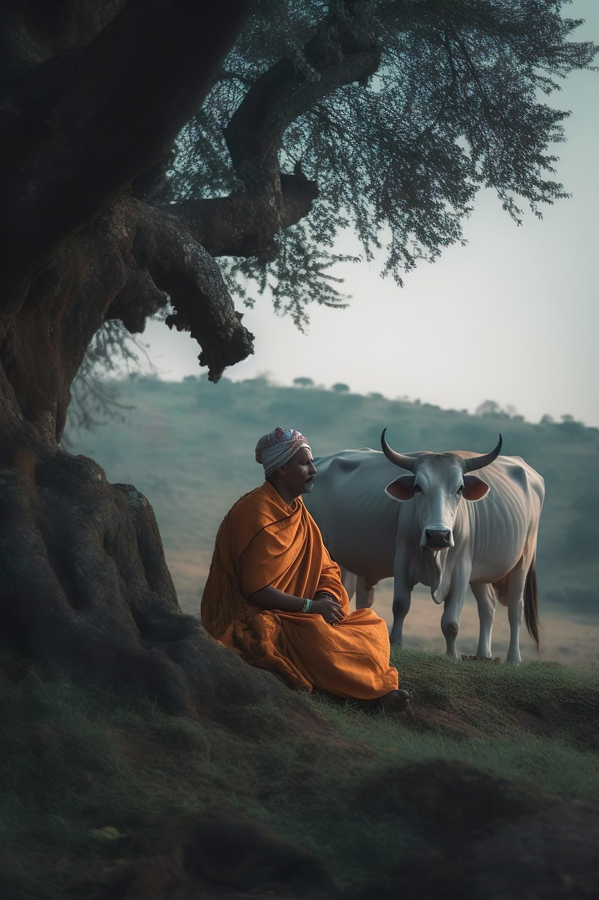
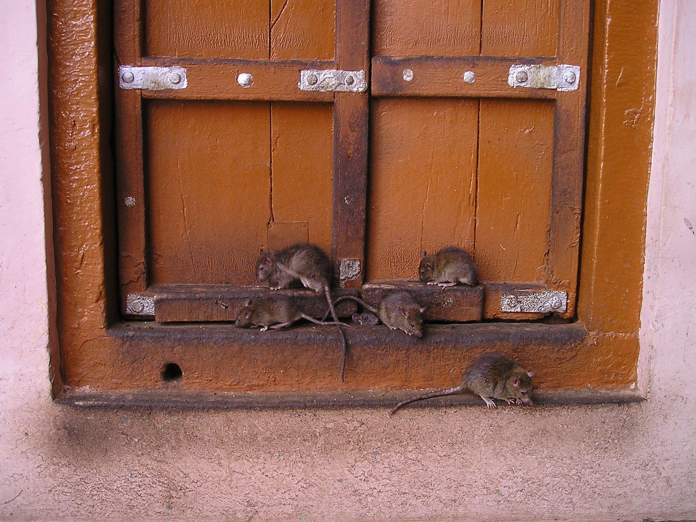

Hier regieren die offiziellen Ikonen des Subkontinents. Atemberaubend schön, tief verwurzelt und streng geschützt!
Wie viele? Ca. 3.680 Raubkatzen (Tendenz dank strenger Schutzprojekte leicht steigend!).
Das Besondere: Absolut einzigartige Streifenmuster und sie lieben Wasser! Sie sind fantastische Schwimmer.
Warum ist es wichtig? Seit 1973 das offizielle Nationaltier. Steht für pure Kraft und ist das Reittier der hinduistischen Göttin Durga.
Wo zu finden? In den dichten Wäldern von Ranthambore oder den wilden Mangroven der Sundarbans.
Wie viele? Rund 27.000 bis 31.000 sanfte Riesen wandern durch die indischen Regionen.
Das Besondere: Kleiner als die afrikanischen Verwandten, aber extrem schlau, feinfühlig und hochsozial.
Warum wichtig? Gilt als nationales Kulturerbe ("National Heritage Animal") und verkörpert den beliebten Gott Ganesha.
Wo zu finden? Vor allem im grünen Süden, perfekt geschützt im Periyar Nationalpark oder in Assam.
Wie viele? Weit verbreitet, stabile Populationen im ganzen Land (streng geschützt unter dem Wildlife Protection Act).
Das Besondere: Die Männchen besitzen ein schillerndes Rad aus über 200 Prachtfedern, um die Weibchen zu beeindrucken.
Warum wichtig? Seit 1963 der offizielle Nationalvogel Indiens. Symbolisiert Schönheit, Anmut und Freude, eng verbunden mit Gott Krishna.
Wo zu finden? Praktisch überall in Dörfern, offenen Wäldern und Tempelgärten, besonders häufig im halbtrockenen Rajasthan.
In Indien verschmelzen Natur und Spiritualität. Fahre mit der Maus über die Kacheln oder klicke sie an, um ihre faszinierenden Geschichten zu enthüllen!

✅ Absolut geschützt
Wie viele? Über 190 Millionen!
Besonderheit: Besitzen den typischen Fettbuckel und sind extrem hitzeresistent.
Bedeutung: Im Hinduismus das Symbol für Gewaltlosigkeit (Ahimsa) und Überfluss. Sie wird niemals geschlachtet.
Wo? Sie spazieren völlig tiefenentspannt durch den dichtesten Straßenverkehr aller indischen Großstädte.
✅ Weit verbreitet
Wie viele? Hunderttausende im ganzen Land.
Besonderheit: Rabenschwarzes Gesicht mit hellem Haarkranz und unendlich langen Kletterschwänzen.
Bedeutung: Gelten als lebende Abbilder des treuen Affengottes Hanuman und werden in Tempelanlagen mit Früchten verwöhnt.
Wo? Besonders spektakulär am berühmten Jakhu-Tempel in Shimla oder überall in Rajasthan.

✅ Tempel-VIPs
Wie viele? Über 25.000 heilige Ratten leben im Karni-Mata-Tempel.
Besonderheit: Werden dort liebevoll "Kabbas" genannt. Läuft eine über deine Füße, bringt das großes Glück!
Bedeutung: Gelten als Reinkarnationen der Geschichtenerzähler und stehen unter dem Schutz der Göttin Karni Mata.
Wo? Ausschließlich im weltberühmten Karni-Mata-Tempel in Deshnoke (Rajasthan).
⚠️ Vorsicht, giftig!
Wie viele? Genaue Zahlen fehlen, der Bestand gilt als gefährdet (Vulnerable).
Besonderheit: Die längste Giftschlange der Welt (bis zu 5,5 Meter!). Kann sich meterhoch aufrichten.
Bedeutung: Eng mit Gott Shiva verbunden (der sie um den Hals trägt). Am Schlangenfest "Nag Panchami" wird sie tief verehrt.
Wo? In den dichten Regenwäldern der Western Ghats oder den Dschungeln im Nordosten Indiens.
Die unangefochtenen Schwergewichte der indischen Nationalparks. Alle fünf wilden Wunder im Überblick!
Schaue dir rechts die Vorschau-Videos an. Klicke auf ein Video, damit es auf die große Leinwand in der Mitte wandert!
Schaue dir unten die Vorschau-Videos an. Klicke auf ein Video, damit es auf die große Leinwand oben wandert!
Destination Wild: India's Lost Worlds | Episode 1
Episode 1
Episode 2
Episode 3